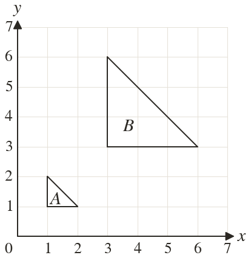
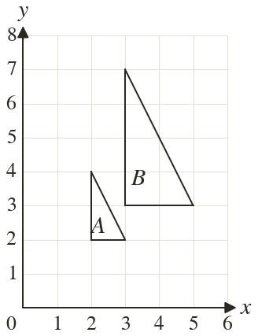
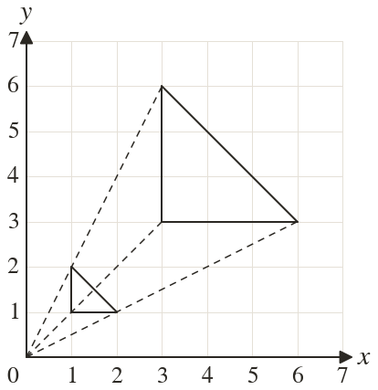
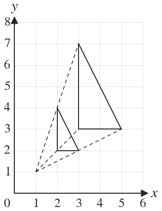

Westonbirt Maths · Transformations
Positive Integer Enlargements
Name: ______________________ Date: ____________
1
Find the scale factor and the centre of the enlargement that maps A onto B.
2
Find the scale factor and the centre of the enlargement that maps A onto B.
3
A side of cm becomes cm in an enlargement. Find the scale factor.
4
maps to and maps to Find the scale factor and the centre.
5
Why do lines through matching points meet at the centre of enlargement?
Ext
In an enlargement by scale factor a point is units from the centre. How far is its image from the point itself?



